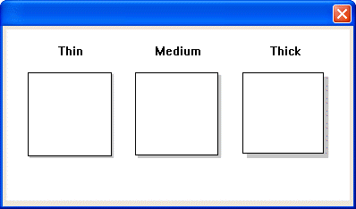
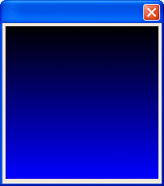

DRAW_BOX()
Syntax
DRAW_BOX( Xpos as N, Ypos as N, Width as N, Height as N, Box_Border as C, Fill_Color as C, Border_Color as C [, Line_Width as N [, Shadow_Style as C [, Shadow_Width as N [, Shadow_Color as C ]]]] )
Argument | Description |
Xpos | The horizontal coordinate of the upper left corner of the rectangle. |
Ypos | The vertical coordinate of the upper left corner of the rectangle. |
Width | The width of the rectangle. |
Height | The height of the rectangle. |
Box_Border | The style of the border. The style may be any of the following:
|
Fill_Color | The fill color of the rectangle. |
Border_Color | The border color of the rectangle. |
Line_Width | Optional. Default = 0. The width of the border in pixels. |
Shadow_Style | Optional. Default = No shadow. The style may any of the following:
|
Shadow_Width | Optional. Default = 0
|
Shadow_Color | Optional. Default = "black". The color of the shadow. |
Description
The DRAW_BOX() function draws a box with an optional shadow.


Limitations
Used only in the Code sections of UI_BITMAP_DRAW(), UI_SCREEN_DRAW(), and UI_PRINTER_DRAW().
Examples
ui_bitmap_create("test", 4, 2) ui_bitmap_draw("test",<<%code% inner_Rect(0, 0, 4, 2) text("Thin", .75, .25,"center") text("Medium", 2, .25,"center") text("Thick", 3.25, .25,"center") draw_box(.25, .5, 1, 1, "SINGLE", "white", "black", 1, "SHADOW", 1, "gray") draw_box(1.50, .5, 1, 1, "SINGLE", "white", "black", 1, "SHADOW", 2, "gray") draw_box(2.75, .5, 1, 1, "SINGLE", "white", "black", 1, "SHADOW", 3, "gray") %code%) ui_dlg_box("","{image=test}") |
Drawing a gradient with all shades of blue.
dim vlen as N dim hlen as N dim steps as N hlen = 1 vlen = 4 steps = 256 ui_bitmap_create("foo", hlen, vlen) ui_bitmap_Draw("foo",<<%code% for i = 0 to (steps - 1) y1 = (vlen * i) / steps y2 = (vlen * (i + 1)) / steps set_brush("#0, 0, " + i) inner_rect(0, y1, hlen, y2) next %code%) ui_dlg_box("","{image=foo}") |
See Also